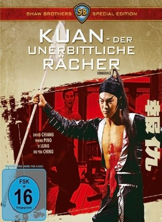

#5692 Kuan - Der unerbittliche Rächer
Alternativ: Vengeance (Englischer Titel)
 
 IMDB-Wertung: 7.2 / 10
IMDB-Wertung: 7.2 / 10  Metascore: 0
Metascore: 0 
Hsiao will Rache für den Tod seines Bruders Kuan. Dieser wurde von der Bande des Feng getötet, aus dem Weg geschaft, da dieser hinter Kuans Frau Hua her war. Kuan stellte Feng dafür zu Rede und musste dieses mit seinem Leben bezahlen. Kuans Bruder Hsiao nimmt dafür blutige Rache an denen die damit zu tun hatten ...
Jahr: 1970
Dauer: 98 Minuten
FSK: 16
Land: Hong-Kong Studio: M.I.B.Tonspuren:
Untertitel:
Auflösung: 1080p (1920x816) Größe: 6717 MB
Genre: Action, Drama, Liebe
Regisseur: Cheh Chang
Drehbuch: Torsten Wenzel
Soundtrack:
Darsteller:
Datei: X:\HD-Eastern-Classic(A-M)\Kuan - Der unerbittliche Rächer (1970, FSK16, 1920x816).mkv seit 10.03.2017
Festplatte: HD Eastern+Western
 Es gibt insgesamt 63 Filme in der Gruppe 'HD-Eastern-Classic(A-M)'
Es gibt insgesamt 63 Filme in der Gruppe 'HD-Eastern-Classic(A-M)'